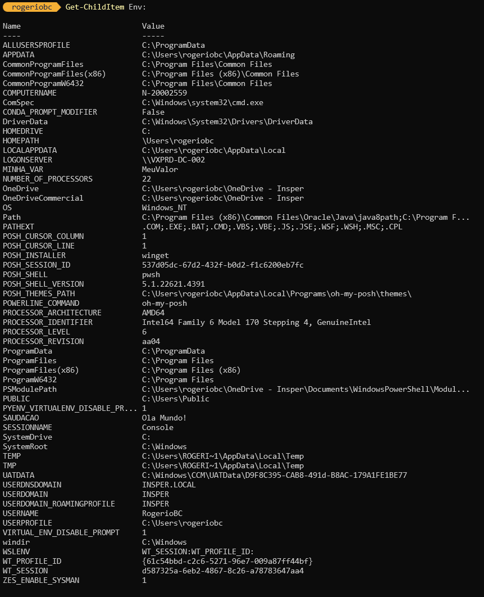

Visualização e Modificação de Variáveis de Ambiente
Via PowerShell
Visualizar Variáveis de Ambiente
Para visualizar todas as variáveis de ambiente no PowerShell, use o comando:
{kind=link}
Este comando lista todas as variáveis de ambiente atuais, incluindo seus valores.
Modificar Variáveis de Ambiente
Para modificar uma variável de ambiente, você pode usar a seguinte sintaxe:
Por exemplo, para alterar a variável TEMP, você faria:
Você pode veriricar a alteração da variável com o comando
Agora você pode retornar para o valorpadrão do sistema com o seguinte comando
Confira se a variável voltou ao padrão que estava antes da alteração.
** No entanto, essa alteração é temporária e só permanece até o fim da sessão atual do PowerShell.
Criar Variáveis de Ambiente Persistentes
Para criar uma variável de ambiente persistente, use o método [Environment]::SetEnvironmentVariable:
Para o escopo "Machine", que afeta todos os usuários:
Via GUI
Acessar Variáveis de Ambiente no Painel de Controle
- Abrir o Painel de Controle:
- Pressione
Win+R, digitecontrole pressione Enter.
- Pressione
- Ir para Sistema:
- Selecione "Sistema" ou "Sistema e Segurança" > "Sistema".
- Configurações Avançadas:
- Clique em "Configurações avançadas do sistema" na lateral direita.
- Variáveis de Ambiente:
- Na guia "Avançado", clique em "Variáveis de Ambiente".
- Editar ou Adicionar Variáveis:
- Na janela "Variáveis de Ambiente", você pode adicionar, editar ou remover variáveis tanto para o usuário atual quanto para o sistema.
Adicionar uma Variável de Ambiente
- Clique em "Novo":
- Na seção "Variáveis do usuário" ou "Variáveis do sistema", clique em "Novo".
- Insira o nome e valor da variável.
- Salvar Alterações:
- Clique em "OK" para salvar a nova variável.
Exemplo Prático
Suponha que você queira criar uma variável de ambiente chamada MEU_CAMINHO que aponte para um diretório específico.
Via PowerShell:
Para torná-la persistente:
Via GUI:
- Repita os cinco passos anteriores para chegar nas Variáveis de Ambiente, partindo do painel de controle.
- Na seção "Variáveis do usuário", clique em "Novo".
- Insira
MEU_CAMINHOcomo nome eC:\MeuDiretoriocomo valor.
Essas são as principais formas de visualizar e modificar variáveis de ambiente no Windows usando PowerShell e a interface gráfica do usuário.